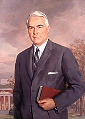
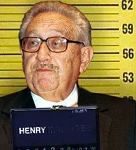

Tuesday, March the 16th, 2004
back to: title, date or indexes
On 31st January, we had cause to mention the science fiction author Punter Hoonjaw, in a copy of whose potboiler Attack of the Zargons from Planet Git was found the anonymous “Captain Cake” manuscript to which Dobson devoted so much impenetrable verbiage. There are those who say that Hoonjaw (1904-1993) is a justly neglected figure, but today is the centenary of his birth, and here at Hooting Yard we wish to mark it.
Given that he died an octogenarian, it is surprising to learn that Hoonjaw's active career as a writer lasted just six years: his first published story, Dick Dazzle And The Intergalactic Toothpaste Horror, appeared in Inexplicable Yarns Magazine in 1937. Following the publication of his novel The Fiendish Plasma Goo From Outer Space in 1943, Hoonjaw lapsed into silence, and wrote not another word in the half-century until his death. Yet between those two landmarks, he was one of the most prolific writers in history. The sci-fi expert Dr Gavin Foddal, when attempting to produce a catalogue raisonée, estimated that Hoonjaw wrote over seven hundred full-length novels, eighty-odd novellas, and an astonishing four thousand, two hundred and ninety seven short stories. Today, not a single one of the millions of words he wrote is in print. Perplexingly, one will search in vain in secondhand bookshops for any of his work, and the original manuscripts—written in longhand with a fat fountain pen in exquisite copperplate—were all destroyed. In 1957, the by now ex-author set fire to the warehouse in which they were stored as part of an insurance scam involving a gang of ruthlessly violent Bolivian thugs and a mysterious figure known only as “Henry”. That this may have been the self-styled “Doctor” Henry Kissinger, later to become President Nixon's National Security Adviser, is clearly a load of flapdoodle.
The paperback which harboured the “Captain Cake” text has itself vanished from a filing cabinet in the Dobson Building on the Blister Lane Bypass. It is a most curious state of affairs.

Left : Punter Hoonjaw. Right : “Henry” — a vague resemblance to Kissinger.
Hooting Yard on the Air, May the 16th, 2007 : “Kimika Ying Writes In” (starts around 10:00)